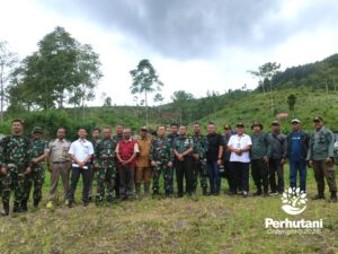

CIANJUR, PERHUTANI (21/01/2026) | Dalam rangka memperkuat tata kelola aset negara serta mendukung kelancaran proyek strategis nasional, Perum Perhutani Kesatuan Pemangkuan Hutan (KPH) Cianjur bersama jajaran TNI, Polri, Pertamina, Badan Pertanahan Nasional (BPN), serta unsur Muspika setempat melaksanakan kegiatan konsolidasi dan pengamanan lapangan di lokasi calon lahan kompensasi yang berada di wilayah Sukanagara, Kabupaten Cianjur, pada Senin (19/01/2026).
Kegiatan tersebut merupakan langkah preventif dan koordinatif untuk memastikan status hukum serta kondisi fisik lahan tetap terjaga, sekaligus mengantisipasi potensi gangguan keamanan hutan (Gukamhut) maupun kemungkinan terjadinya sengketa lahan di kemudian hari.
Menurutnya, kegiatan konsolidasi dan pengamanan lapangan tersebut merupakan bagian dari komitmen Perhutani dalam memperkuat kerja sama strategis dengan para pemangku kepentingan guna mewujudkan pengelolaan hutan yang berkelanjutan.
Ia menambahkan bahwa Perhutani berkomitmen untuk memastikan calon lahan kompensasi berada dalam kondisi bersih dari konflik serta siap dikelola sesuai dengan fungsi dan peruntukannya, sehingga sinergi dengan instansi terkait menjadi hal yang sangat krusial.
Sementara itu, Komandan Kodim (Dandim) 0608/Cianjur, Letkol Inf Bistok Barry Simarmata, menyampaikan kesiapan TNI dalam menjaga stabilitas keamanan di wilayah tersebut serta mendukung program pemerintah pusat, khususnya dalam upaya perbaikan lingkungan dan pengamanan kawasan hutan.
Dari pihak Pertamina, perwakilan manajemen menyampaikan bahwa kolaborasi lintas instansi ini memiliki peran penting dalam proses penyediaan calon lahan kompensasi sebagai kewajiban perusahaan atas penggunaan kawasan hutan. Menurutnya, penyediaan lahan kompensasi yang legal serta berstatus clean and clear merupakan persyaratan utama dalam proses yang diatur oleh pemerintah melalui Kementerian Kehutanan sebagai regulator.
Sementara itu, Dede, selaku perwakilan Badan Pertanahan Nasional (BPN), menekankan pentingnya akurasi data dalam proses penetapan batas lahan. Ia menyampaikan bahwa verifikasi data fisik dan yuridis di lapangan dilakukan sesuai dengan ketentuan yang berlaku guna meminimalkan potensi sengketa di masa mendatang serta memastikan status hukum lahan kompensasi memiliki kekuatan hukum yang sah.
Editor: WK
Copyright © 2026 Warta Nusantara Barat